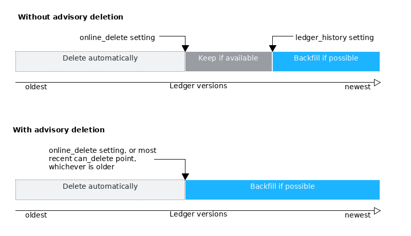
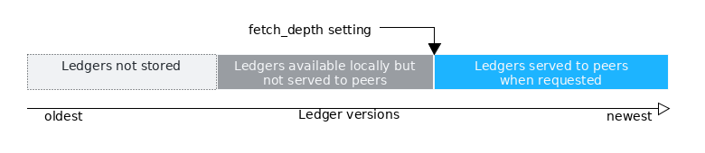
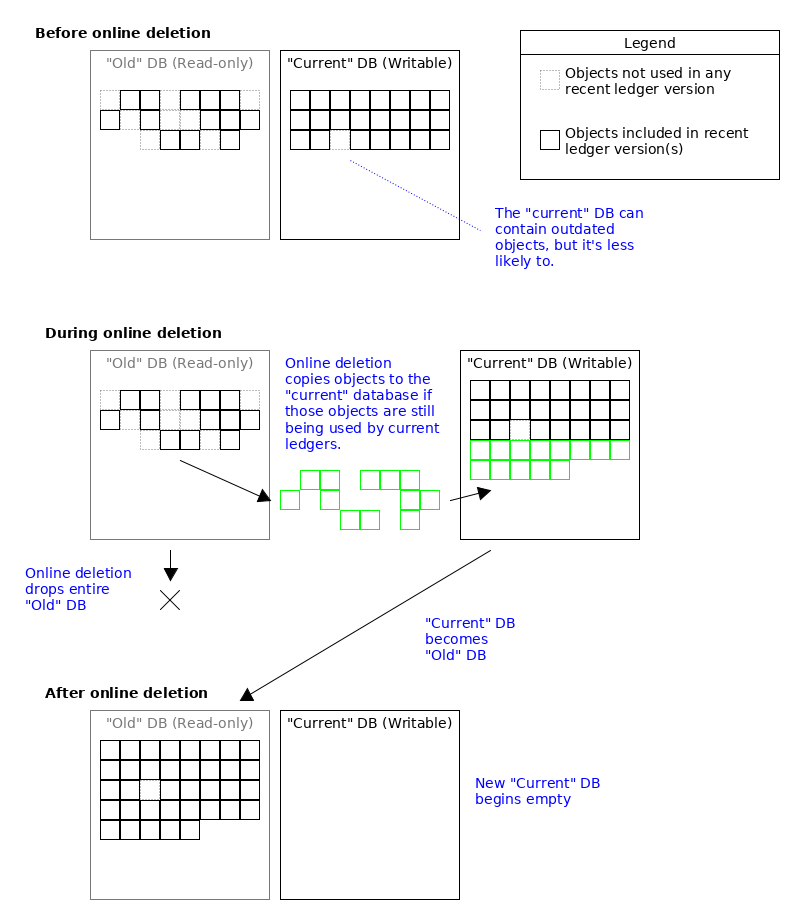

Online Deletion
The online deletion feature lets the rippled server delete the server's local copy of old ledger versions to keep disk usage from rapidly growing over time. The default config file sets online deletion to run automatically, but online deletion can also be configured to run only when prompted. 
The server always keeps the complete current state of the ledger, with all the balances and settings it contains. The deleted data includes older transactions and versions of the ledger state that are older than the stored history.
The default config file sets the rippled server to keep the most recent 2000 ledger versions and automatically delete older data.
Tip: Even with online deletion, the amount of disk space required to store the same time span's worth of ledger data increases over time, because the size of individual ledger versions tends to grow over time. This growth is very slow in comparison to the accumulation of data that occurs without deleting old ledgers. For more information on disk space needs, see Capacity Planning.
Background
The rippled server stores ledger history in its ledger store. This data accumulates over time.
Inside the ledger store, ledger data is "de-duplicated". In other words, data that doesn't change from version to version is only stored once. The records themselves in the ledger store do not indicate which ledger version(s) contain them; part of the work of online deletion is identifying which records are only used by outdated ledger versions. This process is time consuming and affects the disk I/O and application cache, so it is not feasible to delete old data on every ledger close.
Online Deletion Behavior
The online deletion settings configure how many ledger versions the rippled server should keep available in the ledger store at a time. However, the specified number is a guideline, not a hard rule:
- The server never deletes data more recent than the configured number of ledger versions, but it may have less than that amount available if it has not been running for long enough or if it lost sync with the network at any time. (The server attempts to backfill at least some history; see fetching history for details.)
-
The server may store up to just over twice the configured number of ledger versions if online deletion is set to run automatically. (Each time it runs, it reduces the number of stored ledger versions to approximately the configured number.)
If online deletion is delayed because the server is busy, ledger versions can continue to accumulate. When functioning normally, online deletion begins when the server has twice the configured number of ledger versions, but it may not complete until after several more ledger versions have accumulated.
-
If advisory deletion is enabled, the server stores all the ledger versions that it has acquired and built until its administrator calls the can_delete method.
The amount of data the server stores depends on how often you call can_delete and how big an interval of time your
online_deletesetting represents:-
If you call
can_deletemore often than youronline_deleteinterval, the server stores at most a number of ledger versions approximately equal to twice theonline_deletevalue. (After deletion, this is reduced to approximately theonline_deletevalue.)For example, if you call
can_deletewith a value ofnowonce per day and anonline_deletevalue of 50,000, the server typically stores up to 100,000 ledger versions before running deletion. After running deletion, the server keeps at least 50,000 ledger versions (about two days' worth). With this configuration, approximately every othercan_deletecall results in no change because the server does not have enough ledger versions to delete. -
If you call
can_deleteless often than youronline_deleteinterval, the server stores at most ledger versions spanning an amount of time that is approximately twice the interval betweencan_deletecalls. (After deletion, this is reduced to approximately one interval's worth of data.)For example, if you call
can_deletewith a value ofnowonce per day and anonline_deletevalue of 2000, the server typically stores up to two full days' worth of ledger versions before running deletion. After running deletion, the server keeps approximately one day's worth (about 25,000 ledger versions), but never fewer than 2000 ledger versions.
-
With online deletion enabled and running automatically (that is, with advisory delete disabled), the total amount of ledger data stored should remain at minimum equal to the number of ledger versions the server is configured to keep, with the maximum being roughly twice that many.
When online deletion runs, it does not reduce the size of SQLite database files on disk; it only makes space within those files available to be reused for new data. Online deletion does reduce the size of RocksDB or NuDB database files containing the ledger store.
The server only counts validated ledger versions when deciding how far back it can delete. In exceptional circumstances where the server is unable to validate new ledger versions (either because of an outage in its local network connection or because the global XRP Ledger network is unable to reach a consensus) rippled continues to close ledgers so that it can recover quickly when the network is restored. In this case, the server may accumulate many closed but not validated ledger versions. These unvalidated ledgers do not affect how many validated ledger versions the server keeps before running online deletion.
Interrupting Online Deletion
Online deletion automatically stops if the server state becomes less than full. If this happens, the server writes a log message with the prefix SHAMapStore::WRN. The server attempts to start online deletion again after the next validated ledger version after becoming fully synced.
If you stop the server or it crashes while online deletion is running, online deletion resumes after the server is restarted and the server becomes fully synced.
To temporarily disable online deletion, you can use the can_delete method with an argument of never. This change persists until you re-enable online deletion by calling can_delete again. For more information on controlling when online deletion happens, see Advisory Deletion.
Configuration
The following settings relate to online deletion:
-
online_delete- Specify a number of validated ledger versions to keep. The server periodically deletes any ledger versions that are older than this number. If not specified, no ledgers are deleted.The default config file specifies 2000 for this value. This cannot be less than 256, because some events like Fee Voting and the Amendment Process update only every 256 ledgers.
Caution: If you run
rippledwithonline_deletedisabled, then later enableonline_deleteand restart the server, the server disregards but does not delete existing ledger history that your server already downloaded whileonline_deletewas disabled. To save disk space, delete your existing history before re-starting the server after changing theonline_deletesetting. -
[ledger_history]- Specify a number of validated ledgers, equal to or less thanonline_delete. If the server does not have at least this many validated ledger versions, it attempts to backfill them by fetching the data from peers.The default for this setting is 256 ledgers.
The following diagram shows the relationship between
online_deleteandledger_historysettings:
-
advisory_delete- If enabled, online deletion is not scheduled automatically. Instead, an administrator must manually trigger online deletion. Use the value0for disabled or1for enabled.This setting is disabled by default.
-
[fetch_depth]- Specify a number of ledger versions. The server does not accept fetch requests from peers for historical data that is older than the specified number of ledger versions. Specify the valuefullto serve any available data to peers.The default for
fetch_depthisfull(serve all available data).The
fetch_depthsetting cannot be higher thanonline_deleteif both are specified. Iffetch_depthis set higher, the server treats it as equal toonline_deleteinstead.The following diagram shows how fetch_depth works:

For estimates of how much disk space is required to store different amounts of history, see Capacity Planning.
Advisory Deletion
The default config file schedules online deletion to happen automatically and periodically. If the config file does not specify an online_delete interval, online deletion does not occur. If config file enables the advisory_delete setting, online deletion only happens when an administrator triggers it using the can_delete method.
You can use advisory deletion with a scheduled job to trigger automatic deletion based on clock time instead of the number of ledger versions closed. If your server is heavily used, the extra load from online deletion can cause your server to fall behind and temporarily de-sync from the consensus network. If this is the case, you can use advisory deletion and schedule online deletion to happen only during off-peak times.
You can use advisory deletion for other reasons. For example, you may want to manually confirm that transaction data is backed up to a separate server before deleting it. Alternatively, you may want to manually confirm that a separate task has finished processing transaction data before you delete that data.
The can_delete API method can enable or disable automatic deletion, in general or up to a specific ledger version, as long as advisory_delete is enabled in the config file. These settings changes persist even if you restart the rippled server, unless you disable advisory_delete in the config file before restarting.
How It Works
Online deletion works by creating two databases: at any given time, there is an "old" database, which is read-only, and a "current" database, which is writable. The rippled server can read objects from either database, so current ledger versions may contain objects in either one. If an object in a ledger does not change from ledger version to ledger version, only one copy of that object remains in the database, so the server does not store redundant copies of that object. When a new ledger version modifies an object, the server stores the modified object in the "new" database, while the previous version of the object (which is still used by previous ledger versions) remains in the "old" database.
When it comes time for online deletion, the server first walks through the oldest ledger version to keep, and copies all objects in that ledger version from the read-only "old" database into the "current" database. This guarantees that the "current" database now contains all objects used in the chosen ledger version and all newer versions. Then, the server deletes the "old" database, and changes the existing "current" database to become "old" and read-only. The server starts a new "current" database to contain any newer changes after this point.

See Also
- Capacity Planning
- can_delete method - API reference documentation
- Configure Online Deletion
- Configure Advisory Deletion
- Configure Full History